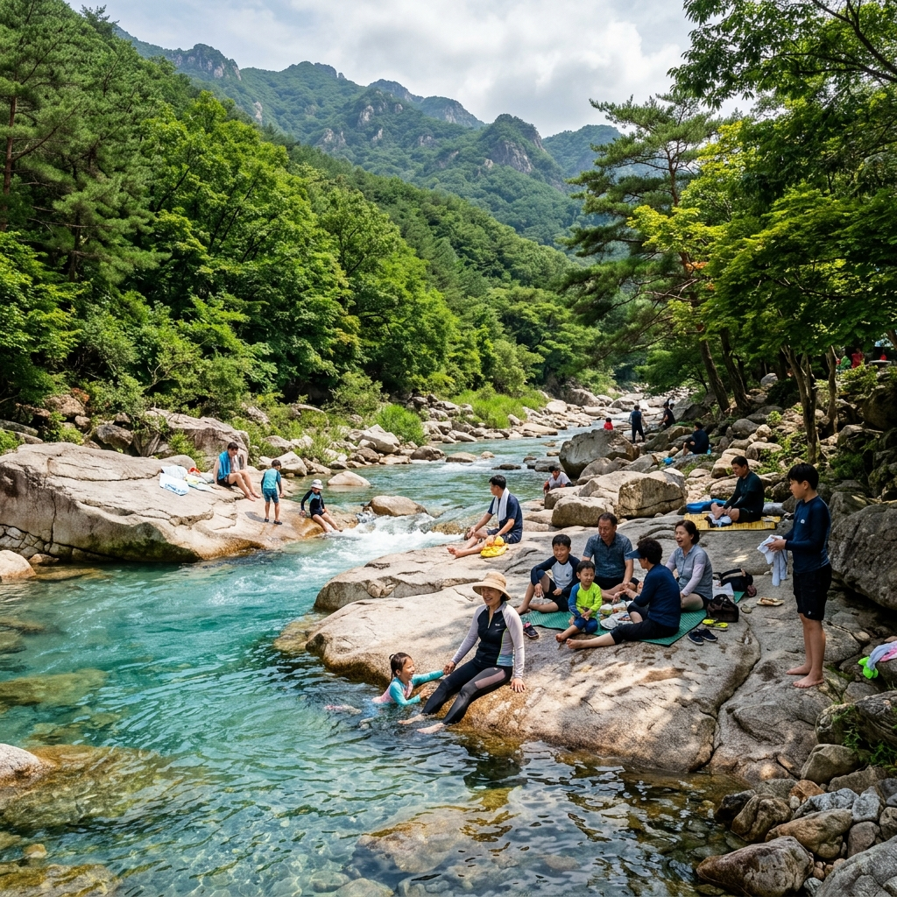
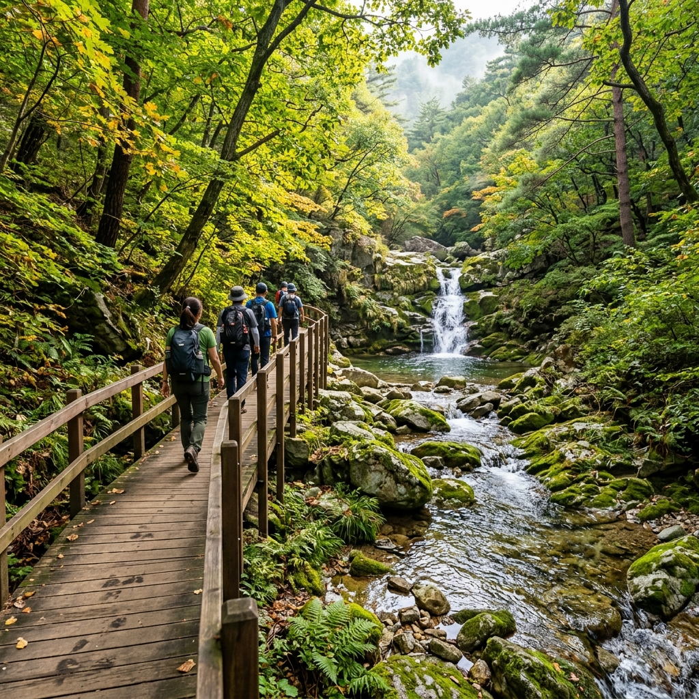
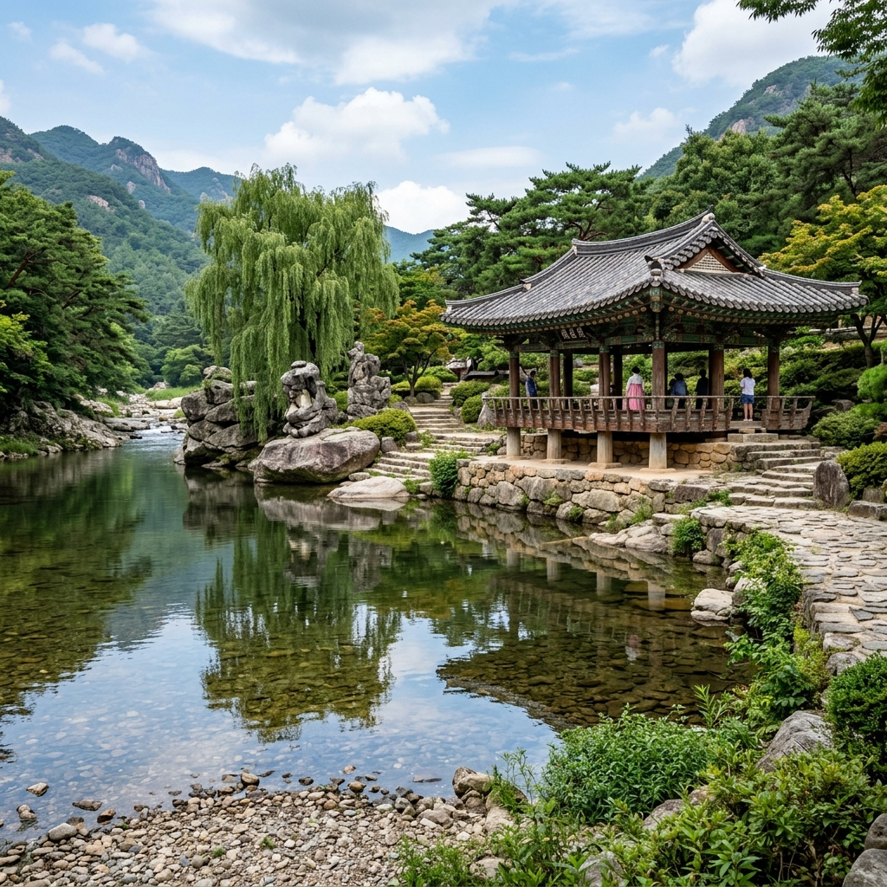

"한여름에도 시원하다"는 말을 믿고 찾아간 거창 월성계곡은, 기대를 가볍게 넘어섰습니다.
계곡 입구에서부터 내려오는 냉기가 달랐습니다. 사선대 너럭바위 위에 걸터앉아 발을 담그자, 수온이 너무 차가워 30초 만에 발을 빼야 했습니다.
수승대와 월성계곡을 연결하는 드라이브 코스까지, 당일치기로 다녀온 실제 동선을 공유합니다.
거창 월성계곡은 경남 거창군 위천면 황산리 일대에 위치합니다.
덕유산 자락에서 발원한 위천이 계곡을 따라 흐르며, 인근에 국민관광지 수승대가 자리하고 있습니다.
사선대는 월성계곡 중간에 있는 너럭바위 구간으로, 선인들이 즐겨 놀았다는 유래가 있습니다. 커다란 화강암 바위들이 계단식으로 이어져 있어 경관이 수려합니다.
수승대 → 월성계곡 → 사선대 순서로 동선을 잡으면 반나절 코스로 무리 없이 돌아볼 수 있습니다.

수승대는 거창군의 대표 국민관광지로, 계곡과 정자·솔숲이 어우러진 경관으로 유명합니다.
구연서원과 요수정이 계곡 옆에 세워져 있어, 자연과 역사가 함께 어우러진 분위기를 만듭니다.
계곡 수심이 전반적으로 얕아 어린아이도 물놀이를 즐길 수 있습니다. 성수기에는 수상 자전거, 물총 놀이터 등 편의 시설도 운영됩니다.
입장료는 무료입니다. 주차장이 넓게 조성돼 있으나, 주말 오전 11시 이후에는 빠르게 차오르므로 오전 일찍 도착을 권장합니다.
수승대 주차장에 차를 세운 뒤 도보로 약 15~20분 걷거나, 차량으로 위천면 황산리 방향으로 3km 더 올라가면 사선대 인근 소형 주차 공간에 도달합니다.
도보 접근 시 위천 강변을 따라 걷는 길이 잘 정비돼 있습니다. 숲 그늘이 이어져 걷는 것 자체가 힐링이 됩니다.
사선대 직전에 작은 돌계단이 있습니다. 내려갈 때 미끄러울 수 있으니 난간을 잡고 천천히 내려가야 합니다.
성수기 주말에는 현지인과 외지 관광객이 함께 몰려 한적한 계곡 분위기가 사라집니다.
사선대 너럭바위 주변 일부 구역은 쓰레기 무단 투기가 문제입니다. 직접 가봤을 때도 바위 틈에 쓰레기가 있어 아쉬웠습니다. 쓰레기봉투를 챙겨 다녀오는 것이 이 계곡을 오래 지킬 수 있는 방법입니다.
거창군청에서 지속적으로 환경 캠페인을 벌이고 있지만, 방문객 의식이 함께 따라줘야 합니다.

거창은 경남이면서도 덕유산권 자연과 인접해 있어, 드라이브 코스가 아름답습니다.
거창 수승대 → 안의 갈계숲 → 함양 상림 코스는 약 1시간 30분 드라이브로, 계곡과 숲을 연이어 즐길 수 있습니다.
반대 방향으로는 덕유산 영각사 방면으로 올라가 고원 경치를 즐기는 코스도 있습니다. 단, 좁은 산길이므로 대형 차량은 주의해야 합니다.
거창은 사과로 유명한 고장입니다. 여름에는 아직 사과가 성숙 전이지만, 거창 사과즙이나 사과 막걸리는 방문객들이 즐겨 사 가는 특산품입니다.
계곡 인근 식당에서는 닭볶음탕과 민물고기 매운탕을 파는 곳이 많습니다. 수승대 입구 쪽 식당들은 성수기 점심 시간대에 대기가 생기므로, 11시 30분 이전 조기 입장을 추천합니다.
수승대 인근에는 펜션 단지가 형성돼 있습니다. 계곡 뷰 독채 펜션이 여름 성수기에 인기가 높습니다.
국민여가캠핑장은 예약이 치열하지만 가격 대비 시설이 우수합니다. 숲나들e에서 수시로 취소분을 노리는 것이 좋습니다.
거창 읍내 모텔·호텔은 상대적으로 여유롭고, 수승대까지 차로 20분 이내여서 거점으로 삼기에 좋습니다.

자동차는 대전통영고속도로 거창IC 이용 후 국도로 30분 거리입니다. 서울에서 약 2시간 30분 소요됩니다.
대중교통은 동서울터미널 또는 서울남부터미널에서 거창 직행버스를 이용합니다. 거창 시외버스터미널에서 수승대까지 농어촌버스 또는 택시를 이용하세요.
부산이나 대구에서는 1시간 이내로 당일치기가 부담 없습니다.
맑고 차가운 계곡물에서 조용히 쉬고 싶은 분들에게 강력 추천합니다.
큰 놀이기구나 인파를 원하지 않고, 바위 위에서 책을 읽거나 도시락을 먹는 여유로운 여름을 원하는 분들에게 딱 맞는 공간입니다.
초등학생 이상 자녀와 계곡 탐험을 원하는 가족에게도 좋습니다. 단, 아주 어린 유아와 함께라면 수심과 바위 미끄러움에 주의가 필요합니다.